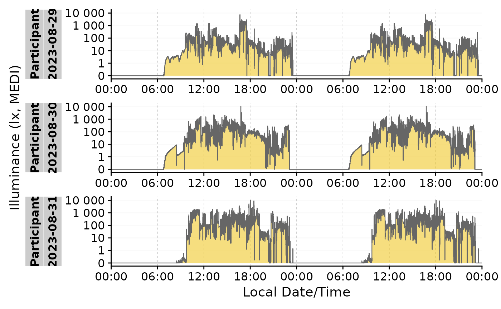
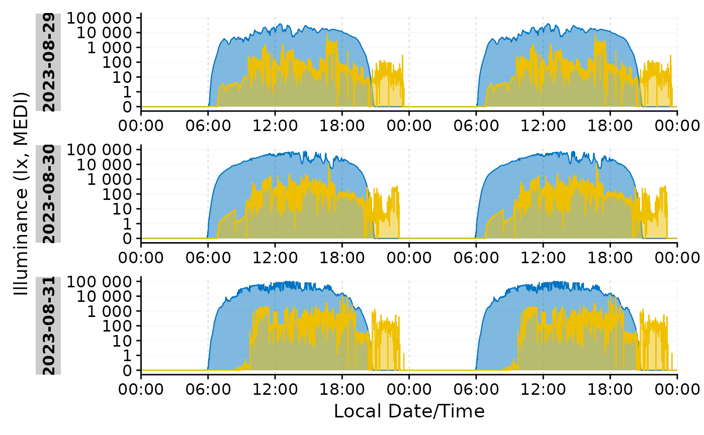
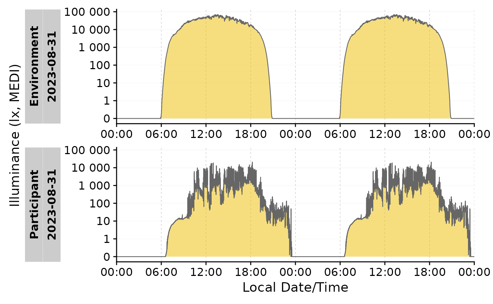

The function is by default opinionated, and will automatically select the best way to display the double date plot. However, the user can also manually select the type of double date plot to be displayed: repeating each day (default when there is only one day in all of the groups), or displaying consecutive days (default when there are multiple days in the groups).
Usage
gg_doubleplot(
dataset,
Datetime.colname = Datetime,
type = c("auto", "repeat", "next"),
geom = "ribbon",
alpha = 0.5,
col = "grey40",
fill = "#EFC000FF",
linewidth = 0.4,
x.axis.breaks.next = Datetime_breaks,
x.axis.format.next = "%a %D",
x.axis.breaks.repeat = ~Datetime_breaks(.x, by = "6 hours", shift =
lubridate::duration(0, "hours")),
x.axis.format.repeat = "%H:%M",
...
)Arguments
- dataset
A light logger dataset. Expects a
dataframe. If not imported by LightLogR, take care to choose a sensible variable for theDatetime.colname.- Datetime.colname
column name that contains the datetime. Defaults to
"Datetime"which is automatically correct for data imported with LightLogR. Expects asymbol. Needs to be part of thedataset. Must be of typePOSIXct.- type
One of "auto", "repeat", or "next". The default is "auto", which will automatically select the best way to display the double date plot based on the amount of days in the dataset (
all = 1 >> "repeat", else "next). "repeat" will repeat each day in the plot, and "next" will display consecutive days.- geom
The type of geom to be used in the plot. The default is "ribbon".
- alpha, linewidth
The alpha and linewidth setting of the geom. The default is 0.5 and 0.4, respectively.
- col, fill
The color and fill of the geom. The default is "#EFC000FF". If the parameters
aes_coloraes_fillare used through..., these will override the respectivecolandfillparameters.- x.axis.breaks.next, x.axis.breaks.repeat
Datetime breaks when consecutive days are displayed (
type = "next") or days are repeated (type = "repeat"). Must be a function. The default fornextis a label at 12:00 am of each day, and forrepeatis a label every 6 hours.- x.axis.format.next, x.axis.format.repeat
Datetime label format when consecutive days are displayed (
type = "next") or days are repeated (type = "repeat"). The default fornextis"%a %D", showing the date, and forrepeatist"%H:%M", showing hours and minutes. Seebase::strptime()for more options.- ...
Arguments passed to
gg_days(). When the argumentsaes_colandaes_fillare used, they will invalidate thecolandfillparameters.
Details
gg_doubleplot() is a wrapper function for gg_days(), combined with an internal function to duplicate and reorganize dates in a dataset for a double plot view. This means that the same day is displayed multiple times within the plot in order to reveal pattern across days.
Examples
#take only the Participant data from sample data, and three days
library(dplyr)
library(lubridate)
library(ggplot2)
sample.data <-
sample.data.environment %>%
dplyr::filter(Id == "Participant") %>%
filter_Date(length = ddays(3))
#create a double plot with the default settings
sample.data %>% gg_doubleplot()
#repeat the same day in the plot
sample.data %>% gg_doubleplot(type = "repeat")

#more examples that are not executed for computation time:
# \donttest{
#use the function with more than one Id
sample.data.environment %>%
filter_Date(length = ddays(3)) %>%
gg_doubleplot(aes_fill = Id, aes_col = Id) +
facet_wrap(~ Date.data, ncol = 1, scales = "free_x", strip.position = "left")
#if data is already grouped by days, type = "repeat" will be automatic
sample.data.environment %>%
dplyr::group_by(Date = date(Datetime), .add = TRUE) %>%
filter_Date(length = ddays(3)) %>%
gg_doubleplot(aes_fill = Id, aes_col = Id) +
guides(fill = "none", col = "none") + #remove the legend
facet_wrap(~ Date.data, ncol = 1, scales = "free_x", strip.position = "left")

#combining `aggregate_Date()` with `gg_doubleplot()` easily creates a good
#overview of the data
sample.data.environment %>%
aggregate_Date() %>%
gg_doubleplot()

# }